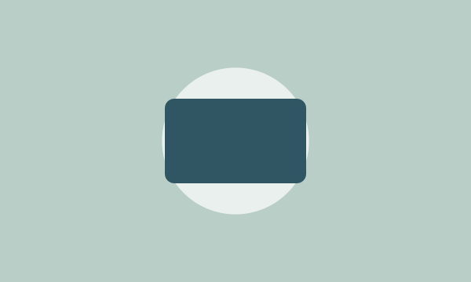
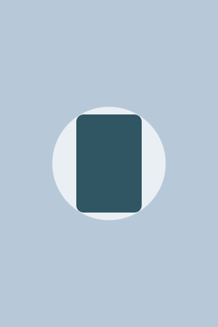

教育故事設計
將故事與學習任務結合，讓學習者從角色與情境開始理解內容。
活動 07：三張作品卡的圖片比例不同，因此我統一圖片高度、使用 object-fit: cover，並將卡片間距調整為 24px；長文字保留完整，空間不足時允許換行。

將故事與學習任務結合，讓學習者從角色與情境開始理解內容。
透過觀察、預測與互動活動，讓抽象概念變成可以操作與討論的學習經驗。這張卡片保留較長的文字，用來確認內容不會因為版面調整而被截斷。

使用清楚的區塊與一致的圖片比例，引導訪客快速理解作品集內容。
我的觀察：我選擇 cover，因為作品卡需要保持一致的封面高度；圖片可能裁切，但不會被拉伸變形。文字則完整保留。